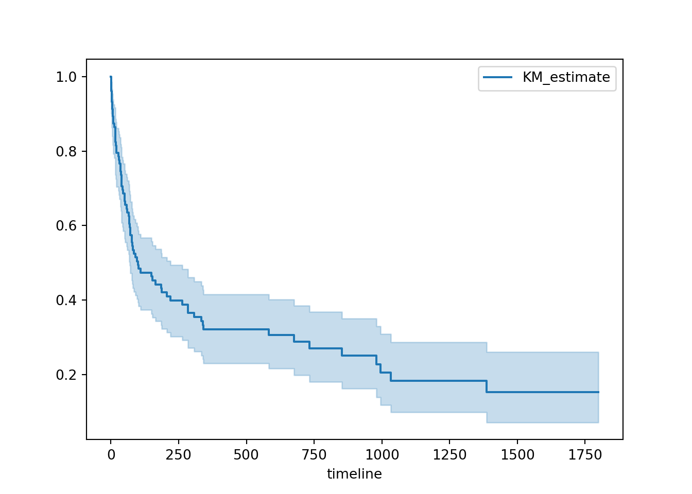
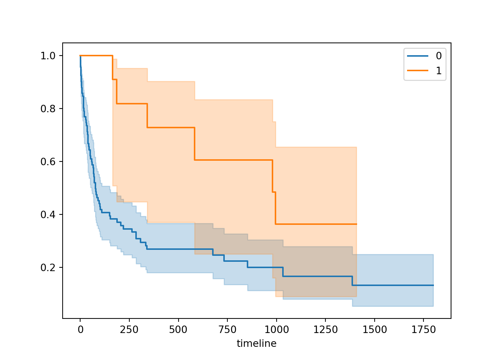
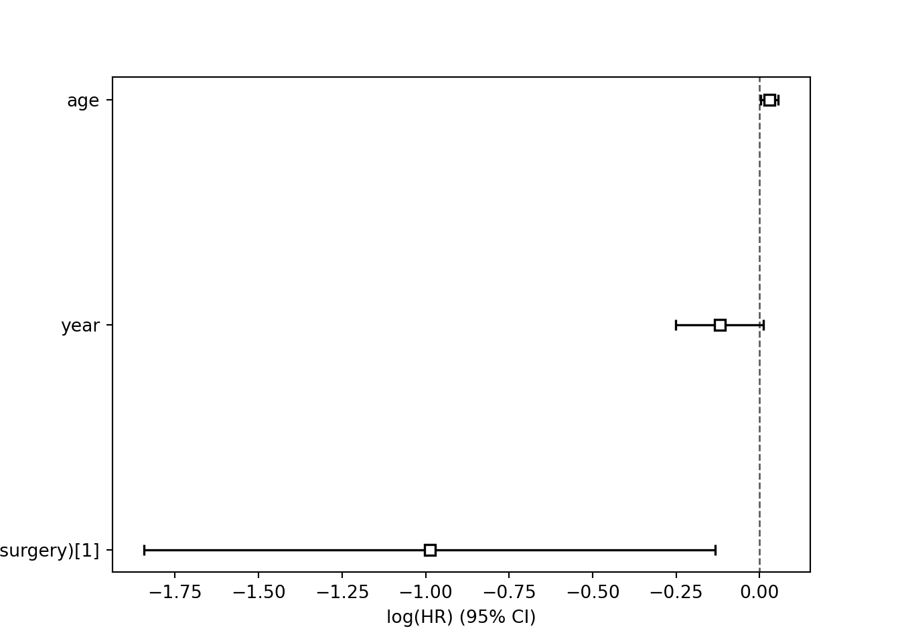

Deux paquets d’analyse: principalementlifelines (km, cox, aft…) et statsmodels (estimation logit en temps discret).
Le package statsmodels est également ne mesure d’estimer des courbes de séjour de type Kaplan-Meier et des modèles à risque proportionnel de Cox. Le package lifelines couvre la quasi totalité des méthodes standards. Il ne couvre pas (encore) les risques concurrents.
import numpy as np
import pandas as pd
import patsy as pt
import lifelines as lf
import matplotlib.pyplot as pltimport os
os.environ['QT_QPA_PLATFORM_PLUGIN_PATH'] ='C:/Users/thevenin_m/AppData/Local/Continuum/anaconda3/Library/plugins/platforms'trans = pd.read_csv("D:/Marc/SMS/FORMATIONS/2019/analyse durees/a distribuer/transplantation.csv")
trans.head(10)## id year age surgery transplant wait died stime mois
## 0 1 67 30 0 0 0 1 50 3
## 1 2 68 51 0 0 0 1 6 1
## 2 3 68 54 0 1 1 1 16 2
## 3 4 68 40 0 1 36 1 39 2
## 4 5 68 20 0 0 0 1 18 2
## 5 6 68 54 0 0 0 1 3 1
## 6 7 68 50 0 1 51 1 675 24
## 7 8 68 45 0 0 0 1 40 2
## 8 9 68 47 0 0 0 1 85 4
## 9 10 68 42 0 1 12 1 58 3trans.info()## <class 'pandas.core.frame.DataFrame'>
## RangeIndex: 103 entries, 0 to 102
## Data columns (total 9 columns):
## # Column Non-Null Count Dtype
## --- ------ -------------- -----
## 0 id 103 non-null int64
## 1 year 103 non-null int64
## 2 age 103 non-null int64
## 3 surgery 103 non-null int64
## 4 transplant 103 non-null int64
## 5 wait 103 non-null int64
## 6 died 103 non-null int64
## 7 stime 103 non-null int64
## 8 mois 103 non-null int64
## dtypes: int64(9)
## memory usage: 7.4 KBhttps://lifelines.readthedocs.io/en/latest/
T = trans['stime']
E = trans['died']from lifelines import KaplanMeierFitter
kmf = KaplanMeierFitter()
kmf.fit(T,E)## <lifelines.KaplanMeierFitter:"KM_estimate", fitted with 103 total observations, 28 right-censored observations>
##
## C:\Users\THEVEN~1\AppData\Local\Programs\Python\Python38\lib\site-packages\lifelines\fitters\kaplan_meier_fitter.py:346: FutureWarning: Support for multi-dimensional indexing (e.g. `obj[:, None]`) is deprecated and will be removed in a future version. Convert to a numpy array before indexing instead.
## self.confidence_interval_ = self._bounds(cumulative_sq_[:, None], alpha, ci_labels)print(kmf.survival_function_)## KM_estimate
## timeline
## 0.0 1.000000
## 1.0 0.990291
## 2.0 0.961165
## 3.0 0.932039
## 5.0 0.912621
## ... ...
## 1400.0 0.151912
## 1407.0 0.151912
## 1571.0 0.151912
## 1586.0 0.151912
## 1799.0 0.151912
##
## [89 rows x 1 columns]a = "DUREE MEDIANE:"
b = kmf.median_survival_time_
print(a,b)## DUREE MEDIANE: 100.0kmf.plot()
ax = plt.subplot(111)
kmf = KaplanMeierFitter()
for name, grouped_df in trans.groupby('surgery'):
kmf.fit(grouped_df['stime'], grouped_df['died'], label=name)
kmf.plot(ax=ax)
from lifelines.statistics import multivariate_logrank_test
results = multivariate_logrank_test(trans['stime'], trans['surgery'], trans['died'])
results.print_summary()## <lifelines.StatisticalResult: multivariate_logrank_test>
## t_0 = -1
## null_distribution = chi squared
## degrees_of_freedom = 1
## test_name = multivariate_logrank_test
##
## ---
## test_statistic p -log2(p)
## 6.59 0.01 6.61model = 'year + age + C(surgery) -1'
X = pt.dmatrix(model, trans, return_type='dataframe')
design_info = X.design_info
YX = X.join(trans[['stime','died']])
YX.drop(['C(surgery)[0]'], axis=1, inplace=True)
YX.head()## C(surgery)[1] year age stime died
## 0 0.0 67.0 30.0 50 1
## 1 0.0 68.0 51.0 6 1
## 2 0.0 68.0 54.0 16 1
## 3 0.0 68.0 40.0 39 1
## 4 0.0 68.0 20.0 18 1from lifelines import CoxPHFitter
cph = CoxPHFitter()
cph.fit(YX, duration_col='stime', event_col='died')## <lifelines.CoxPHFitter: fitted with 103 total observations, 28 right-censored observations>cph.print_summary()## <lifelines.CoxPHFitter: fitted with 103 total observations, 28 right-censored observations>
## duration col = 'stime'
## event col = 'died'
## baseline estimation = breslow
## number of observations = 103
## number of events observed = 75
## partial log-likelihood = -289.31
## time fit was run = 2020-10-30 10:29:13 UTC
##
## ---
## coef exp(coef) se(coef) coef lower 95% coef upper 95% exp(coef) lower 95% exp(coef) upper 95%
## C(surgery)[1] -0.99 0.37 0.44 -1.84 -0.13 0.16 0.88
## year -0.12 0.89 0.07 -0.25 0.01 0.78 1.01
## age 0.03 1.03 0.01 0.00 0.06 1.00 1.06
##
## z p -log2(p)
## C(surgery)[1] -2.26 0.02 5.40
## year -1.78 0.08 3.72
## age 2.19 0.03 5.12
## ---
## Concordance = 0.65
## Partial AIC = 584.61
## log-likelihood ratio test = 17.63 on 3 df
## -log2(p) of ll-ratio test = 10.90cph.plot()
Test PH: Schoenfeld Méthode 1
cph.check_assumptions(YX,p_value_threshold=0.05, show_plots=True)## The ``p_value_threshold`` is set at 0.05. Even under the null hypothesis of no violations, some
## covariates will be below the threshold by chance. This is compounded when there are many covariates.
## Similarly, when there are lots of observations, even minor deviances from the proportional hazard
## assumption will be flagged.
##
## With that in mind, it's best to use a combination of statistical tests and visual tests to determine
## the most serious violations. Produce visual plots using ``check_assumptions(..., show_plots=True)``
## and looking for non-constant lines. See link [A] below for a full example.
##
## <lifelines.StatisticalResult: proportional_hazard_test>
## null_distribution = chi squared
## degrees_of_freedom = 1
## test_name = proportional_hazard_test
##
## ---
## test_statistic p -log2(p)
## C(surgery)[1] km 4.01 0.05 4.47
## rank 3.72 0.05 4.21
## age km 1.18 0.28 1.86
## rank 1.03 0.31 1.69
## year km 2.07 0.15 2.73
## rank 2.18 0.14 2.83
##
##
## 1. Variable 'C(surgery)[1]' failed the non-proportional test: p-value is 0.0452.
##
## Advice: with so few unique values (only 2), you can include `strata=['C(surgery)[1]', ...]` in
## the call in `.fit`. See documentation in link [E] below.
##
## ---
## [A] https://lifelines.readthedocs.io/en/latest/jupyter_notebooks/Proportional%20hazard%20assumption.html
## [B] https://lifelines.readthedocs.io/en/latest/jupyter_notebooks/Proportional%20hazard%20assumption.html#Bin-variable-and-stratify-on-it
## [C] https://lifelines.readthedocs.io/en/latest/jupyter_notebooks/Proportional%20hazard%20assumption.html#Introduce-time-varying-covariates
## [D] https://lifelines.readthedocs.io/en/latest/jupyter_notebooks/Proportional%20hazard%20assumption.html#Modify-the-functional-form
## [E] https://lifelines.readthedocs.io/en/latest/jupyter_notebooks/Proportional%20hazard%20assumption.html#Stratification
##
##
## C:\Users\THEVEN~1\AppData\Local\Programs\Python\Python38\lib\site-packages\lifelines\fitters\kaplan_meier_fitter.py:346: FutureWarning: Support for multi-dimensional indexing (e.g. `obj[:, None]`) is deprecated and will be removed in a future version. Convert to a numpy array before indexing instead.
## self.confidence_interval_ = self._bounds(cumulative_sq_[:, None], alpha, ci_labels)
## C:\Users\THEVEN~1\AppData\Local\Programs\Python\Python38\lib\site-packages\lifelines\fitters\kaplan_meier_fitter.py:346: FutureWarning: Support for multi-dimensional indexing (e.g. `obj[:, None]`) is deprecated and will be removed in a future version. Convert to a numpy array before indexing instead.
## self.confidence_interval_ = self._bounds(cumulative_sq_[:, None], alpha, ci_labels)Test PH: Schoenfeld Méthode 2
from lifelines.statistics import proportional_hazard_test
zph = proportional_hazard_test(cph, YX, time_transform='all')## C:\Users\THEVEN~1\AppData\Local\Programs\Python\Python38\lib\site-packages\lifelines\fitters\kaplan_meier_fitter.py:346: FutureWarning: Support for multi-dimensional indexing (e.g. `obj[:, None]`) is deprecated and will be removed in a future version. Convert to a numpy array before indexing instead.
## self.confidence_interval_ = self._bounds(cumulative_sq_[:, None], alpha, ci_labels)zph.print_summary()## <lifelines.StatisticalResult: proportional_hazard_test>
## null_distribution = chi squared
## degrees_of_freedom = 1
## test_name = proportional_hazard_test
##
## ---
## test_statistic p -log2(p)
## C(surgery)[1] identity 5.54 0.02 5.75
## km 4.01 0.05 4.47
## log 3.69 0.05 4.19
## rank 3.72 0.05 4.21
## age identity 1.61 0.20 2.29
## km 1.18 0.28 1.86
## log 0.61 0.44 1.20
## rank 1.03 0.31 1.69
## year identity 0.80 0.37 1.43
## km 2.07 0.15 2.73
## log 1.34 0.25 2.02
## rank 2.18 0.14 2.83Test PH: intéraction
from lifelines.utils import to_episodic_format
from lifelines import CoxTimeVaryingFitterTransformation de la base YX
long = to_episodic_format(YX, duration_col='stime', event_col='died')Création de la variable d’intéraction
long['surgery_t'] = long['C(surgery)[1]'] * long['stop']Estimation
ctv = CoxTimeVaryingFitter()
ctv.fit(long,
id_col='id',
event_col='died',
start_col='start',
stop_col='stop',)## <lifelines.CoxTimeVaryingFitter: fitted with 31938 periods, 103 subjects, 75 events>ctv.print_summary(4)## <lifelines.CoxTimeVaryingFitter: fitted with 31938 periods, 103 subjects, 75 events>
## event col = 'died'
## number of subjects = 103
## number of periods = 31938
## number of events = 75
## partial log-likelihood = -287.3290
## time fit was run = 2020-10-30 10:29:15 UTC
##
## ---
## coef exp(coef) se(coef) coef lower 95% coef upper 95% exp(coef) lower 95% exp(coef) upper 95%
## C(surgery)[1] -1.7547 0.1730 0.6743 -3.0764 -0.4331 0.0461 0.6485
## age 0.0289 1.0293 0.0134 0.0025 0.0552 1.0025 1.0568
## year -0.1231 0.8842 0.0668 -0.2541 0.0079 0.7756 1.0080
## surgery_t 0.0022 1.0022 0.0011 0.0001 0.0044 1.0001 1.0044
##
## z p -log2(p)
## C(surgery)[1] -2.6022 0.0093 6.7542
## age 2.1479 0.0317 4.9785
## year -1.8415 0.0656 3.9312
## surgery_t 2.0239 0.0430 4.5402
## ---
## Partial AIC = 582.6581
## log-likelihood ratio test = 21.5846 on 4 df
## -log2(p) of ll-ratio test = 12.0103Modèle logistique estimé avec le paquet statsmodel. La fonction to_episodic_format de lifelines permet de mettre en forme la base.
Pour la durée, on utilisera ici la variable mois (regroupement de stime par intervalle de 30 jours).
import statsmodels.formula.api as smf #type R formule => ce qu'on utilisera#
import statsmodels.api as sm #type python#Transformation de la base en format long
td = pd.read_csv("D:/Marc/SMS/FORMATIONS/2019/analyse durees/a distribuer/transplantation.csv")
td.drop(['id'], axis=1, inplace=True)
td['dur'] = td['mois']
td = to_episodic_format(td, duration_col='mois', event_col='died')Recherche de l’ajustement
\(f(t)=a\times t\)
td['t2'] = td['stop']**2
td['t3'] = td['stop']**3
fit1 = smf.glm(formula= "died ~ stop", data=td, family=sm.families.Binomial()).fit()
fit2 = smf.glm(formula= "died ~ stop + t2", data=td, family=sm.families.Binomial()).fit()
fit3 = smf.glm(formula= "died ~ stop + t2 + t3", data=td, family=sm.families.Binomial()).fit()Comparaison des AIC
print("AIC pour ajustement t1")## AIC pour ajustement t1print(fit1.aic)## 516.1039235968562print("AIC pour ajustement durée t1 + t2")## AIC pour ajustement durée t1 + t2print(fit2.aic)## 508.1014573009212print("AIC pour ajustement durée t1 + t2 + t3")## AIC pour ajustement durée t1 + t2 + t3print(fit3.aic)## 506.1882809518765Estimation du modèle
tdfit = smf.glm(formula= "died ~ stop + t2 + t3 + year + age + surgery", data=td, family=sm.families.Binomial()).fit()
tdfit.summary()## <class 'statsmodels.iolib.summary.Summary'>
## """
## Generalized Linear Model Regression Results
## ==============================================================================
## Dep. Variable: died No. Observations: 1164
## Model: GLM Df Residuals: 1157
## Model Family: Binomial Df Model: 6
## Link Function: logit Scale: 1.0000
## Method: IRLS Log-Likelihood: -240.20
## Date: Fri, 30 Oct 2020 Deviance: 480.39
## Time: 11:29:17 Pearson chi2: 1.30e+03
## No. Iterations: 7
## Covariance Type: nonrobust
## ==============================================================================
## coef std err z P>|z| [0.025 0.975]
## ------------------------------------------------------------------------------
## Intercept 6.3097 5.201 1.213 0.225 -3.884 16.503
## stop -0.2807 0.077 -3.635 0.000 -0.432 -0.129
## t2 0.0096 0.005 2.083 0.037 0.001 0.019
## t3 -0.0001 6.97e-05 -1.493 0.135 -0.000 3.26e-05
## year -0.1263 0.072 -1.747 0.081 -0.268 0.015
## age 0.0337 0.014 2.330 0.020 0.005 0.062
## surgery -1.0050 0.447 -2.250 0.024 -1.880 -0.130
## ==============================================================================
## """Création des intervalles pour l’exemple (quantile de la durée en mois)
td['ct4'] = pd.qcut(td['stop'],[0, .25, .5, .75, 1.])
td['ct4'].value_counts(normalize=True)*100## (0.999, 4.0] 27.233677
## (11.0, 23.0] 24.484536
## (4.0, 11.0] 24.398625
## (23.0, 61.0] 23.883162
## Name: ct4, dtype: float64td.ct4 = pd.Categorical(td.ct4)
td['ct4'] = td.ct4.cat.codesPour chaque individu, on conserve une seule observation par intervalle
td2 = td
td2['t'] = td2['ct4']
td2 = td2.sort_values(['id', 'stop'])
td2 = td2.groupby(['id','ct4']).last()
td2.head(20)## stop start died age dur ... wait year t2 t3 t
## id ct4 ...
## 0 0 3.0 2.0 1 30 3 ... 0 67 9.0 27.0 0
## 1 0 1.0 0.0 1 51 1 ... 0 68 1.0 1.0 0
## 2 0 2.0 1.0 1 54 2 ... 1 68 4.0 8.0 0
## 3 0 2.0 1.0 1 40 2 ... 36 68 4.0 8.0 0
## 4 0 2.0 1.0 1 20 2 ... 0 68 4.0 8.0 0
## 5 0 1.0 0.0 1 54 1 ... 0 68 1.0 1.0 0
## 6 0 4.0 3.0 0 50 24 ... 51 68 16.0 64.0 0
## 1 11.0 10.0 0 50 24 ... 51 68 121.0 1331.0 1
## 2 23.0 22.0 0 50 24 ... 51 68 529.0 12167.0 2
## 3 24.0 23.0 1 50 24 ... 51 68 576.0 13824.0 3
## 7 0 2.0 1.0 1 45 2 ... 0 68 4.0 8.0 0
## 8 0 4.0 3.0 1 47 4 ... 0 68 16.0 64.0 0
## 9 0 3.0 2.0 1 42 3 ... 12 68 9.0 27.0 0
## 10 0 4.0 3.0 0 47 6 ... 26 68 16.0 64.0 0
## 1 6.0 5.0 1 47 6 ... 26 68 36.0 216.0 1
## 11 0 1.0 0.0 1 53 1 ... 0 68 1.0 1.0 0
## 12 0 4.0 3.0 1 54 4 ... 17 68 16.0 64.0 0
## 13 0 4.0 3.0 0 53 47 ... 37 68 16.0 64.0 0
## 1 11.0 10.0 0 53 47 ... 37 68 121.0 1331.0 1
## 2 23.0 22.0 0 53 47 ... 37 68 529.0 12167.0 2
##
## [20 rows x 13 columns]Estimation
td2fit = smf.glm(formula= "died ~ C(t) + year + age + surgery", data=td2, family=sm.families.Binomial()).fit()
td2fit.summary()## <class 'statsmodels.iolib.summary.Summary'>
## """
## Generalized Linear Model Regression Results
## ==============================================================================
## Dep. Variable: died No. Observations: 200
## Model: GLM Df Residuals: 193
## Model Family: Binomial Df Model: 6
## Link Function: logit Scale: 1.0000
## Method: IRLS Log-Likelihood: -112.26
## Date: Fri, 30 Oct 2020 Deviance: 224.52
## Time: 11:29:17 Pearson chi2: 229.
## No. Iterations: 5
## Covariance Type: nonrobust
## ==============================================================================
## coef std err z P>|z| [0.025 0.975]
## ------------------------------------------------------------------------------
## Intercept 11.8018 6.617 1.784 0.074 -1.167 24.770
## C(t)[T.1] -0.9078 0.408 -2.227 0.026 -1.707 -0.109
## C(t)[T.2] -1.8451 0.587 -3.141 0.002 -2.996 -0.694
## C(t)[T.3] -0.3224 0.578 -0.557 0.577 -1.456 0.811
## year -0.1947 0.093 -2.104 0.035 -0.376 -0.013
## age 0.0468 0.018 2.543 0.011 0.011 0.083
## surgery -1.1025 0.503 -2.192 0.028 -2.088 -0.117
## ==============================================================================
## """from lifelines import WeibullAFTFitter, LogLogisticAFTFitterWeibull
aftw = WeibullAFTFitter()
aftw.fit(YX, duration_col='stime', event_col='died')## <lifelines.WeibullAFTFitter: fitted with 103 total observations, 28 right-censored observations>aftw.print_summary()## <lifelines.WeibullAFTFitter: fitted with 103 total observations, 28 right-censored observations>
## duration col = 'stime'
## event col = 'died'
## number of observations = 103
## number of events observed = 75
## log-likelihood = -488.17
## time fit was run = 2020-10-30 10:29:17 UTC
##
## ---
## coef exp(coef) se(coef) coef lower 95% coef upper 95% exp(coef) lower 95% exp(coef) upper 95%
## lambda_ C(surgery)[1] 1.97 7.17 0.78 0.44 3.50 1.56 33.05
## year 0.16 1.18 0.12 -0.08 0.40 0.93 1.49
## age -0.06 0.94 0.02 -0.11 -0.01 0.90 0.99
## _intercept -3.02 0.05 8.73 -20.13 14.09 0.00 1.31e+06
## rho_ _intercept -0.59 0.56 0.09 -0.77 -0.41 0.46 0.67
##
## z p -log2(p)
## lambda_ C(surgery)[1] 2.53 0.01 6.45
## year 1.33 0.18 2.44
## age -2.49 0.01 6.28
## _intercept -0.35 0.73 0.46
## rho_ _intercept -6.33 <0.005 31.93
## ---
## Concordance = 0.65
## AIC = 986.34
## log-likelihood ratio test = 18.87 on 3 df
## -log2(p) of ll-ratio test = 11.75Loglogistique
aftl = LogLogisticAFTFitter()
aftl.fit(YX, duration_col='stime', event_col='died')## <lifelines.LogLogisticAFTFitter: fitted with 103 total observations, 28 right-censored observations>aftl.print_summary()## <lifelines.LogLogisticAFTFitter: fitted with 103 total observations, 28 right-censored observations>
## duration col = 'stime'
## event col = 'died'
## number of observations = 103
## number of events observed = 75
## log-likelihood = -482.58
## time fit was run = 2020-10-30 10:29:17 UTC
##
## ---
## coef exp(coef) se(coef) coef lower 95% coef upper 95% exp(coef) lower 95% exp(coef) upper 95%
## alpha_ C(surgery)[1] 2.27 9.72 0.69 0.92 3.63 2.51 37.68
## year 0.24 1.27 0.12 0.01 0.47 1.01 1.60
## age -0.04 0.96 0.02 -0.08 -0.00 0.92 1.00
## _intercept -10.41 0.00 8.34 -26.76 5.94 0.00 381.76
## beta_ _intercept -0.18 0.83 0.10 -0.37 0.01 0.69 1.01
##
## z p -log2(p)
## alpha_ C(surgery)[1] 3.29 <0.005 9.96
## year 2.05 0.04 4.65
## age -2.01 0.04 4.49
## _intercept -1.25 0.21 2.24
## beta_ _intercept -1.86 0.06 4.00
## ---
## Concordance = 0.66
## AIC = 975.16
## log-likelihood ratio test = 21.69 on 3 df
## -log2(p) of ll-ratio test = 13.69https://www.statsmodels.org/dev/duration.html
Le package permet d’estimer des fonction de séjour de type Kaplan-Meier et des modèles de Cox.
km = sm.SurvfuncRight(trans["stime"], trans["died"])
km.plot()
km.summary()## Surv prob Surv prob SE num at risk num events
## Time
## 1 0.990291 0.009661 103 1.0
## 2 0.961165 0.019037 102 3.0
## 3 0.932039 0.024799 99 3.0
## 5 0.912621 0.027825 96 2.0
## 6 0.893204 0.030432 94 2.0
## ... ... ... ... ...
## 852 0.250655 0.048731 14 1.0
## 979 0.227868 0.049341 11 1.0
## 995 0.205081 0.049390 10 1.0
## 1032 0.182295 0.048877 9 1.0
## 1386 0.151912 0.049277 6 1.0
##
## [62 rows x 4 columns]km.summary()## Surv prob Surv prob SE num at risk num events
## Time
## 1 0.990291 0.009661 103 1.0
## 2 0.961165 0.019037 102 3.0
## 3 0.932039 0.024799 99 3.0
## 5 0.912621 0.027825 96 2.0
## 6 0.893204 0.030432 94 2.0
## ... ... ... ... ...
## 852 0.250655 0.048731 14 1.0
## 979 0.227868 0.049341 11 1.0
## 995 0.205081 0.049390 10 1.0
## 1032 0.182295 0.048877 9 1.0
## 1386 0.151912 0.049277 6 1.0
##
## [62 rows x 4 columns]Les test du log-rank sont disponibles avec la fonction survdiff (nom idem R). Au niveau graphique, la programmation semble un peu lourde et mériterait d’être simplifiée (donc non traitée).
Comparaison de S(t) à partir des tests du log-rank
Test non pondéré
sm.duration.survdiff(trans.stime, trans.died, trans.surgery)## (6.590012323234387, 0.010255246157888975)Breslow
sm.duration.survdiff(trans.stime, trans.died, trans.surgery, weight_type='gb')## (8.989753779902495, 0.0027149757927903417)Tarone-Ware
sm.duration.survdiff(trans.stime, trans.died, trans.surgery, weight_type='tw')## (8.462352726451392, 0.0036257256194570653)mod = smf.phreg("stime ~ year + age + surgery ",trans, status='died', ties="efron")
rslt = mod.fit()
print(rslt.summary())## Results: PHReg
## =============================================================
## Model: PH Reg Sample size: 103
## Dependent variable: stime Num. events: 75
## Ties: Efron
## -------------------------------------------------------------
## log HR log HR SE HR t P>|t| [0.025 0.975]
## -------------------------------------------------------------
## year -0.1196 0.0673 0.8872 -1.7765 0.0757 0.7775 1.0124
## age 0.0296 0.0135 1.0300 2.1872 0.0287 1.0031 1.0577
## surgery -0.9873 0.4363 0.3726 -2.2632 0.0236 0.1584 0.8761
## =============================================================
## Confidence intervals are for the hazard ratios